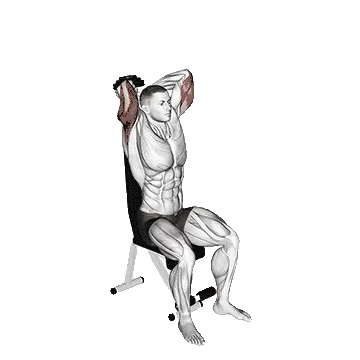

Seated Dumbbell French Press
Seated Dumbbell French Press shows average weight and strength standards as a reference for arms. Primary muscles: Triceps brachii, Biceps brachii.

Average weight: Intermediate
Reference for an intermediate lifter.
Men
70 lb
Women
28 lb
Seated Dumbbell French Press: Average weight [1RM]
| Level | ||
|---|---|---|
| Beginner | 21 lb | 7 lb |
| Novice | 41 lb | 16 lb |
| Intermediate | 70 lb | 28 lb |
| Advanced | 108 lb | 44 lb |
| Elite | 150 lb | 63 lb |
Note: These standards are 1RM estimates based on average lifters. Bodyweight, age, and other personal factors can affect the values. See the detailed tables below.
Seated Dumbbell French Press: Strength standards (lb)
Men by bodyweight (lb) [1RM]
| Bodyweight | Beginner | Novice | Intermediate | Advanced | Elite |
|---|---|---|---|---|---|
| 110 | 10 | 24 | 47 | 76 | 111 |
| 120 | 12 | 27 | 51 | 82 | 118 |
| 130 | 14 | 30 | 55 | 87 | 124 |
| 140 | 16 | 33 | 59 | 92 | 130 |
| 150 | 18 | 36 | 63 | 96 | 135 |
| 160 | 20 | 39 | 66 | 101 | 140 |
| 170 | 22 | 42 | 70 | 105 | 146 |
| 180 | 23 | 44 | 73 | 109 | 150 |
| 190 | 25 | 47 | 76 | 113 | 155 |
| 200 | 27 | 49 | 80 | 117 | 160 |
| 210 | 29 | 52 | 83 | 121 | 164 |
| 220 | 31 | 54 | 86 | 124 | 168 |
| 230 | 33 | 56 | 89 | 128 | 172 |
| 240 | 34 | 59 | 91 | 131 | 176 |
| 250 | 36 | 61 | 94 | 135 | 180 |
| 260 | 38 | 63 | 97 | 138 | 184 |
| 270 | 39 | 65 | 100 | 141 | 187 |
| 280 | 41 | 67 | 102 | 144 | 191 |
| 290 | 42 | 69 | 105 | 147 | 194 |
| 300 | 44 | 71 | 107 | 150 | 198 |
| 310 | 46 | 73 | 109 | 153 | 201 |
Men by age [1RM]
| Age | Beginner | Novice | Intermediate | Advanced | Elite |
|---|---|---|---|---|---|
| 15 | 18 | 35 | 60 | 92 | 128 |
| 20 | 20 | 40 | 69 | 105 | 146 |
| 25 | 21 | 41 | 70 | 108 | 150 |
| 30 | 21 | 41 | 70 | 108 | 150 |
| 35 | 21 | 41 | 70 | 108 | 150 |
| 40 | 21 | 41 | 70 | 108 | 150 |
| 45 | 20 | 39 | 67 | 102 | 142 |
| 50 | 18 | 37 | 63 | 96 | 134 |
| 55 | 17 | 34 | 58 | 89 | 124 |
| 60 | 15 | 31 | 53 | 81 | 113 |
| 65 | 14 | 28 | 48 | 73 | 102 |
| 70 | 13 | 25 | 43 | 66 | 91 |
| 75 | 11 | 22 | 38 | 59 | 82 |
| 80 | 10 | 20 | 34 | 52 | 73 |
| 85 | 9 | 18 | 31 | 47 | 66 |
| 90 | 8 | 16 | 28 | 42 | 59 |
Women by bodyweight (lb) [1RM]
| Bodyweight | Beginner | Novice | Intermediate | Advanced | Elite |
|---|---|---|---|---|---|
| 90 | 4 | 10 | 21 | 34 | 50 |
| 100 | 5 | 12 | 22 | 36 | 53 |
| 110 | 5 | 13 | 24 | 38 | 55 |
| 120 | 6 | 14 | 25 | 40 | 58 |
| 130 | 7 | 15 | 27 | 42 | 60 |
| 140 | 8 | 16 | 28 | 44 | 62 |
| 150 | 8 | 17 | 30 | 45 | 64 |
| 160 | 9 | 18 | 31 | 47 | 66 |
| 170 | 10 | 19 | 32 | 48 | 67 |
| 180 | 10 | 20 | 33 | 50 | 69 |
| 190 | 11 | 21 | 34 | 51 | 70 |
| 200 | 11 | 21 | 35 | 52 | 72 |
| 210 | 12 | 22 | 36 | 54 | 73 |
| 220 | 13 | 23 | 37 | 55 | 75 |
| 230 | 13 | 24 | 38 | 56 | 76 |
| 240 | 14 | 25 | 39 | 57 | 78 |
| 250 | 14 | 25 | 40 | 58 | 79 |
| 260 | 15 | 26 | 41 | 59 | 80 |
Women by age [1RM]
| Age | Beginner | Novice | Intermediate | Advanced | Elite |
|---|---|---|---|---|---|
| 15 | 6 | 14 | 24 | 38 | 54 |
| 20 | 7 | 16 | 28 | 43 | 61 |
| 25 | 7 | 16 | 28 | 44 | 63 |
| 30 | 7 | 16 | 28 | 44 | 63 |
| 35 | 7 | 16 | 28 | 44 | 63 |
| 40 | 7 | 16 | 28 | 44 | 63 |
| 45 | 7 | 15 | 27 | 42 | 60 |
| 50 | 7 | 14 | 25 | 40 | 56 |
| 55 | 6 | 13 | 23 | 37 | 52 |
| 60 | 6 | 12 | 21 | 33 | 47 |
| 65 | 5 | 11 | 19 | 30 | 43 |
| 70 | 4 | 10 | 17 | 27 | 38 |
| 75 | 4 | 9 | 15 | 24 | 34 |
| 80 | 4 | 8 | 14 | 22 | 31 |
| 85 | 3 | 7 | 12 | 19 | 28 |
| 90 | 3 | 6 | 11 | 18 | 25 |
Note: Dumbbell weights in the table are for one dumbbell.
Muscles worked
| Group | Muscles |
|---|---|
| Primary muscles | Triceps brachii, Biceps brachii |
| Secondary muscles | Deltoids |
| Stabilizers | Rectus abdominis, External obliques |
| Grip | Forearm extensors |
Track and analyze in the Shiba app
Review weight, reps, and progress in one place.
How to read the table
| Level | Description | Distribution |
|---|---|---|
| Beginner | Has learned proper form and trained consistently for at least 1 month. | Bottom 5% |
| Novice | Has trained consistently for at least 6 months. | Top 80% |
| Intermediate | Has trained consistently for at least 2 years. | Top 50% |
| Advanced | Has trained consistently for more than 5 years. | Top 20% |
| Elite | Has specialized in this exercise for more than 5 years. | Top 5% |
More exercises
Arms
Reverse-Grip Pushdown
Arms
JM Press
Arms
Tate Press
Arms
Ring Dips
Arms / Bodyweight
Bench Dip
Arms / Bodyweight
Wrist Curl
Arms
Reverse Barbell Curl
Arms / Barbell
Reverse Wrist Curl
Arms
Dumbbell Wrist Curl
Arms / Dumbbell
Dumbbell Reverse Wrist Curl
Arms / Dumbbell
Dumbbell Reverse Curl
Arms / Dumbbell
Dumbbell Curl
Arms / Dumbbell